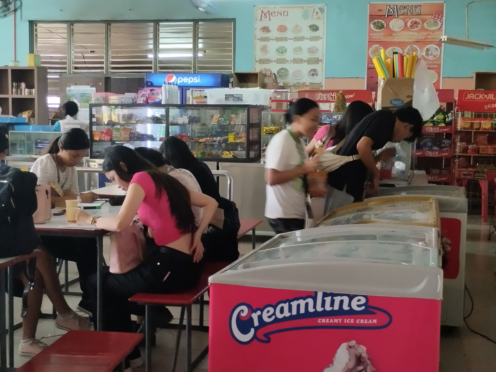
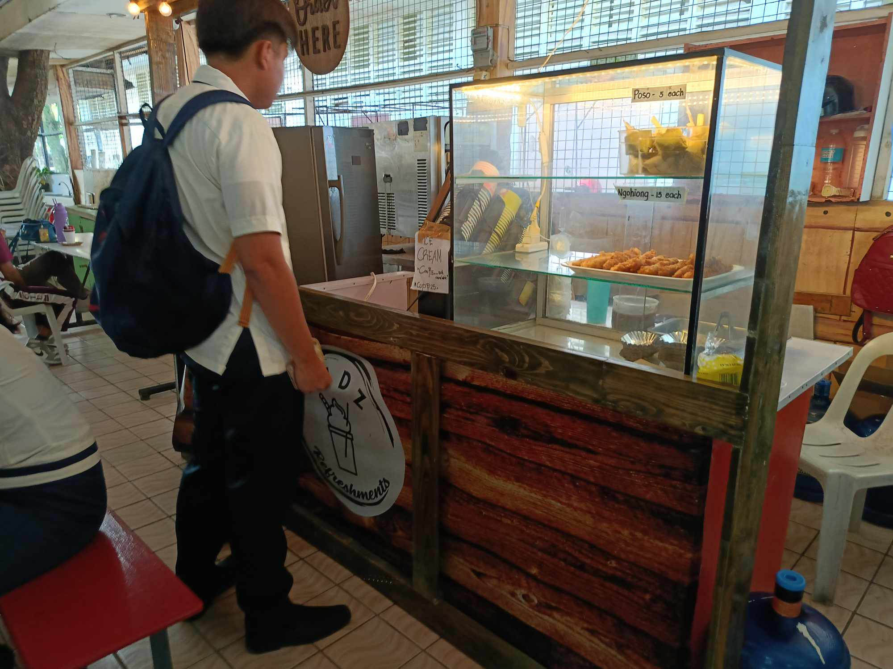
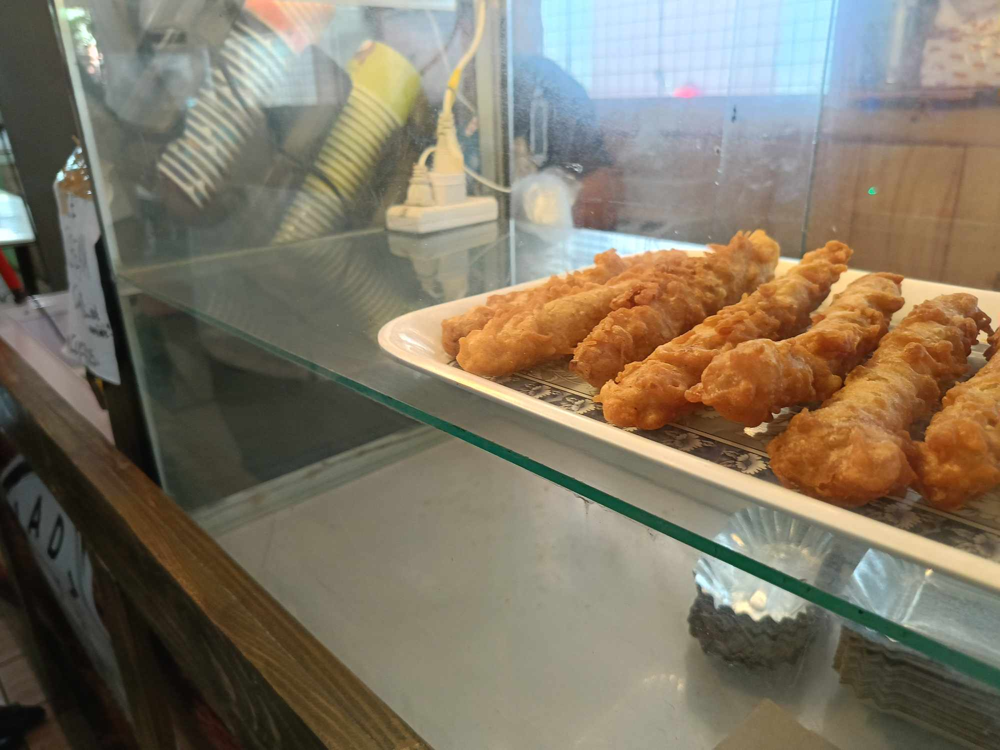
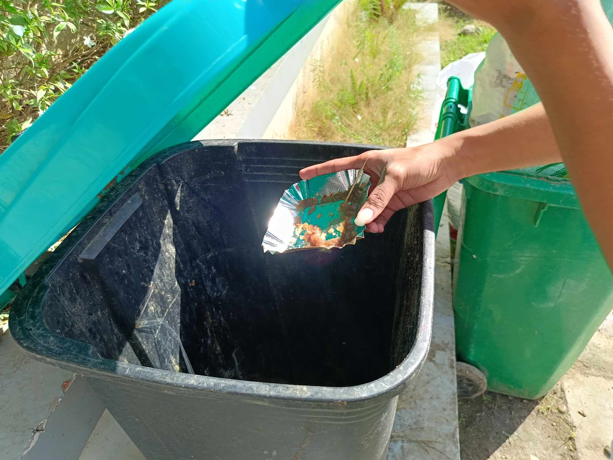

How to eat at the Canteen
A university canteen is a central hub where students, faculty, and staff gather to enjoy meals, snacks, and beverages. It offers a wide range of affordable food options, catering to diverse dietary preferences and cultural backgrounds. Beyond being a place to eat, the canteen serves as a social space where students can relax, collaborate, and build connections outside the classroom. Often located at the heart of the campus, it provides a convenient and welcoming environment, making it an essential part of university life. The canteen's lively atmosphere fosters a sense of community and helps create a more vibrant campus experience.
Step 1: Approach the counter
Usually, a canteen follows a first come first serve system whereas the ones who came first are accommodated and is followed by a queue or line for students to wait for their turn. If your canteen have the same system, it's highly recommended to follow proper decorum. So fall in line and wait for your turn.
Step 2: Browse the items
Once it is your turn, you can now browse for items that interest you or what you like, it can vary from food to drinks. Don't take too long to decide though as there are others waiting for their turns after you.
Step 3: Enjoy
Once you've bought everything you wanted, you can mow enjoy and partake upon it. You can find a free table in which you and your friends, if you have any, can sit down and chat while enjoying the items you have bought.
Step 4: Clean after yourselves
Once you are finished with your meal or short break, you can now leave after you have cleaned up your mess. It is highly encouraged to at least throw away the trash from the items you have bought and return the bottles, plates and utensils to their respective places, most commonly, at the sink.